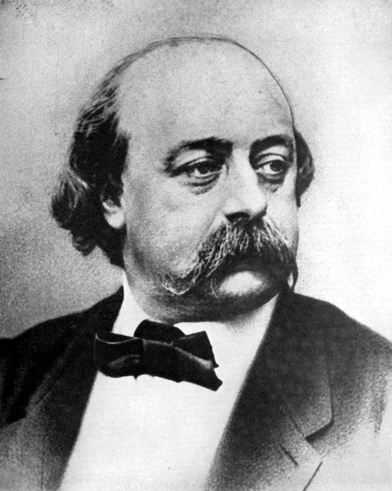

Gustave Flaubert
1821–1880 • Ruão, Normandia / França
Gustave Flaubert foi um escritor francês, nascido em 12 de dezembro de 1821, na cidade de Ruão, na região da Normandia, França. É considerado um dos principais representantes do Realismo europeu e uma das figuras mais importantes da literatura do século XIX. Filho de um cirurgião, cresceu em um ambiente familiar ligado à medicina e teve contato desde cedo com livros e diferentes manifestações culturais. Em 1840, iniciou os estudos de Direito em Paris, mas abandonou a universidade após apresentar problemas de saúde, passando a dedicar-se integralmente à literatura. Sua trajetória foi marcada por uma busca rigorosa pela precisão da linguagem e pela construção de narrativas cuidadosamente elaboradas. Em 1857, publicou Madame Bovary, seu romance mais conhecido, que provocou grande repercussão na sociedade francesa por apresentar críticas ao casamento, à moral burguesa e às convenções sociais. A obra chegou a ser alvo de um processo judicial por suposta ofensa à moral pública, do qual o escritor foi absolvido. Também escreveu obras importantes, como Salambô (1862), A Educação Sentimental (1869) e Três Contos (1877). Flaubert dedicava grande atenção à revisão de seus textos, buscando encontrar a expressão mais precisa para cada situação e personagem. Faleceu em 8 de maio de 1880, em Croisset, próximo à cidade de Ruão, deixando uma contribuição decisiva para o desenvolvimento do romance moderno.
Principais Obras
Temas Recorrentes
A insatisfação humana, o conflito entre idealização e realidade, a hipocrisia social, o adultério, a busca por ascensão social e a influência das convenções burguesas estão entre os principais temas de sua produção literária. Em Madame Bovary, por exemplo, Flaubert retrata a insatisfação de Emma Bovary com sua vida conjugal e com a rotina provinciana, mostrando como suas expectativas românticas entram em conflito com a realidade. Suas obras também abordam a mediocridade da vida cotidiana, as ilusões individuais, a frustração dos desejos e as limitações impostas pela sociedade. Outro aspecto importante é a crítica à burguesia, representada por personagens preocupadas com aparência, prestígio e interesses materiais. Em A Educação Sentimental, o autor explora ainda as desilusões pessoais e políticas de uma geração diante das transformações da França no século XIX.
Características de Escrita
Sua escrita é marcada pelo rigor formal, pela objetividade narrativa e pela observação minuciosa da realidade, características fundamentais do Realismo. Flaubert procurava representar os acontecimentos e os comportamentos humanos sem idealizações românticas, construindo personagens complexas e inseridas em contextos sociais concretos. Uma de suas principais preocupações era a precisão vocabular, buscando a palavra exata para transmitir cada ideia, imagem ou sensação. Também utilizava descrições detalhadas dos ambientes, diálogos cuidadosamente elaborados e uma linguagem que evidenciava as contradições psicológicas das personagens. Outro recurso importante é o discurso indireto livre, técnica narrativa que permite apresentar pensamentos e sentimentos das personagens integrados à voz do narrador, sem a necessidade de introduzir diretamente suas falas. Além disso, evitava intervenções explícitas do narrador, permitindo que os acontecimentos e as atitudes das personagens revelassem as críticas presentes na narrativa. Essa preocupação com a construção estética e a impessoalidade influenciou profundamente o desenvolvimento do romance realista e moderno.
Influências Artísticas
Sua produção literária foi desenvolvida em diálogo com as transformações culturais e intelectuais da Europa do século XIX, especialmente com o fortalecimento do Realismo, que defendia uma representação mais crítica e objetiva da sociedade. Flaubert também foi influenciado pela tradição literária romântica, embora tenha se afastado de suas idealizações ao construir narrativas centradas nas contradições da vida cotidiana. Seu interesse pela História e pela Antiguidade aparece em obras como Salambô, na qual reconstrói aspectos da antiga Cartago por meio de extensa pesquisa histórica. As artes visuais também estabeleceram relações com sua produção, principalmente pela atenção à composição das cenas, aos detalhes dos ambientes e à construção de imagens expressivas. Sua preocupação com a forma literária e com a precisão da linguagem tornou-se referência para escritores posteriores, influenciando autores como Guy de Maupassant, Henry James e Marcel Proust. Dessa maneira, Flaubert contribuiu para consolidar uma literatura que combina observação social, investigação psicológica e rigor artístico.
"Madame Bovary, c'est moi."